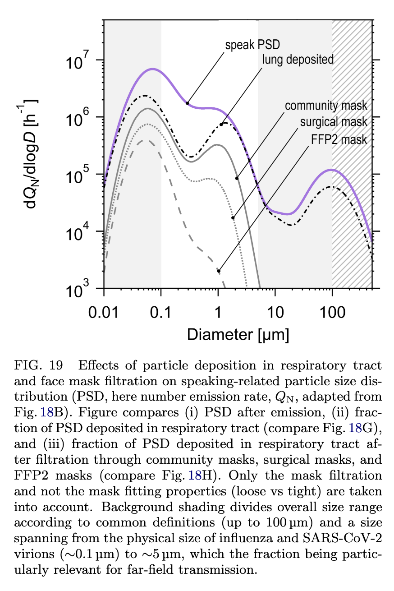
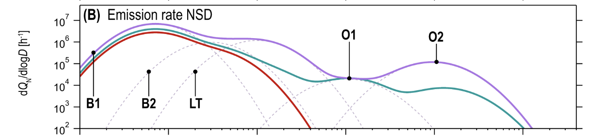
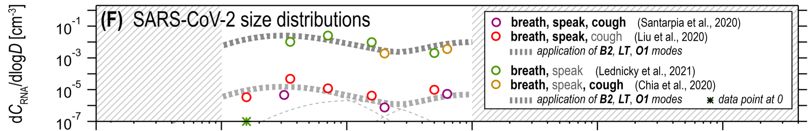

What can a rapid test tell you? Omicron Edition
Dec 23, 2021 16:09 · 5947 words · 28 minute read
(This is not medical advice. Co-written with Nicholas Schiefer. Thanks to Sylvia Hürlimann and Katherine McDaniel for helpful discussions and comments. Corrections welcome.)
This holiday season is also Omicron season. The Omicron variant dramatically increases COVID risk for basically everyone, especially with case counts exploding and doubling every two days in most northern areas (New York, Boston, London). Although Omicron seems to be less severe than other variants for most people, it’s probably worth some effort to protect high-risk individuals, especially while case rates are so high. On the other hand, we’re nearly two years into the pandemic and it feels unreasonable to cancel everything outright.
Thankfully, we have much better tools for managing COVID risk, including rapid antigen tests. Unfortunately, the way that most people use rapid tests is confused and not that effective. Used naively, rapid tests are nearly useless, especially against the fast-growing and fast-spreading Omicron variant. However we believe that with the right protocol, rapid tests can reduce the risk of catching or spreading COVID by perhaps a factor of 20.
Our assessment is based on a relatively detailed physical model of how SARS-CoV-2 is transmitted, which allows us to learn more from the tests than a “black box” approach would. Our model is that SARS-CoV-2 spreads through the following process:
- The virus replicates in the respiratory tract of an infected person.
- As the infected person exhales, they expel respiratory droplets that are large enough to contain the virus and small enough to remain aloft for an extended period of time.
- These particles are then inhaled by other people.
A key quantity in this process is the viral load: the amount of virus that’s present on the aerosol-producing surfaces of the body. Viral loads are usually measured in viral copies per milliliter.
Rapid tests are highly sensitive to the viral load of SARS-CoV-2 in the sample, so a negative rapid test provides a lot of evidence that there was not much virus in the sample. Therefore, proper use of rapid tests is primarily about collecting a sample that has enough virus, so that a negative test provides a lot of evidence that the person is not infectious.
There are four central claims that are the backbone of our proposed testing protocol:
- The risk per unit time of a sick person infecting someone is proportional to the viral load in their respiratory tract. A person with a sufficiently low viral load in the aerosol-producing parts of their respiratory tract is unlikely to be infectious.
- We can collect a proxy sample for this viral load using combined throat and nasal swabs. While we can’t measure viral loads in e.g., the bronchus directly, all of these viral loads track closely enough that a throat sample can be used to place reasonable bounds on the viral load in aerosol-producing regions.
- Antigen tests are highly sensitive to viral loads that are well below those that typically spread infection. In particular, when performed correctly they have a nearly 100% sensitivity at loads that pose significant risk of infection.
- Viral loads grow quickly-but-predictably, so that there is a period of time between tests during which you can be reasonably confident that a person is not infectious.
We also note that our protocol has two significant qualifications:
- The information a test provides rapidly expires: even with the most sensitive ones available on the market, a rapid test taken more than 16 hours ago tells you very little about how infectious someone could be right now. Therefore, serial testing is required for on-going risk reduction, even without new exposures.
- It relies on an unusual use of rapid tests, particularly in the use of throat swabs in additional to nasal swabs. For the Omicron variant especially it seems like a negative test from your nose tells you little about the infectiousness, so our protocol requires using tests in a manner that doesn’t match the instructions or the FDA’s recommendations.
Taken together, we believe that you can catch the vast majority of possible infection risk with proper use of rapid antigen tests.
tl;dr: How should I use rapid antigen tests?
If you don’t want to read our reasoning, here is the protocol that we think reflects the best use of rapid antigen tests:
- Use high-sensitivity tests. Not all tests are created equal: there are tests on the market in the US that are essentially useless for bounding exposure (e.g. iHealth). In the US, we recommend BinaxNow and On/Go tests, though others we haven’t looked at may be good too.
- When taking a test, swab your throat and nose, even if the test just wants a nasal swab. Here’s a video on how (starting at 2:12). If swabbing your throat is too uncomfortable, cough into your mouth a few times and then take a saliva swab from your cheeks and tongue. Having a throat/saliva swab is especially important for detecting infections with the Omicron variant. Throat swabs should probably be performed long after you last ate or drank: instructions from Public Health England and American experts suggest waiting at least 30 minutes, and it might be safer to wait longer.
- For one-off gatherings like dinner parties, test potentially infectious people as they arrive. Remember that most antigen tests are calibrated to work at room temperature, so the test itself should be performed indoors in cold climates. The swabs can be collected outdoors though.
- For repeat gatherings, like spending several days with family, employ serial testing: test infectious people frequently enough so that you catch them before they are likely to infect someone. With commonly available antigen tests, this interval is somewhere between 6 and 12 hours.
Rapid tests are currently quite scarce in the United States; if you have a limited supply of tests, use them on the people who are most likely to be infectious. Focus on recent travelers, people who work in person, or those who have participated in riskier activities like indoor dining in the last 5 days. After 5 days since the most recent exposure, there’s not much point in repeating rapid tests because the person is unlikely to turn infectious.
Test anyone with symptoms. For repeat gatherings test them more frequently than asymptomatic people. Symptoms like coughing and sneezing can enhance droplet/aerosol production, which increases exposure and reduces the time that tests bound infectivity.
For the curious, we’ve broken down the reasoning behind this method in detail.
Breaking down our claims in detail
The quality of our protocol depends on four key claims, outlined above. Here, we dive into each of those claims in detail.
The risk of spreading SARS-CoV-2 is proportional the viral load in the respiratory tract
At this point, it is well-established that COVID-19 spreads primarily through aerosols: tiny droplets produced in the respiratory tract that are small enough to remain suspended in the air for extended periods of time.
The details of how these particles are produced are complex. By far the best modeling we’ve seen on this subject is by Pöhlker, et al (2021). The details could be the subject of an entire post; the high level picture is that respiratory aerosols are generated by various mechanical processes in the respiratory tract, such as vibration of the larynx and the opening and closing of membranes in the bronchioli. In all cases, the respiratory particles contain virus because the fluid that generates them contains virus. Therefore, the viral load in exhaled respiratory particles should be proportional to the viral load in the respiratory tract.
Right away, this tells us that the most important part of making a rapid antigen test work is making sure that the viral load of the sample reflects (or leads) the viral load in aerosol-producing parts of the respiratory tract. Unfortunately, a lot of quantitative writing on this subject just uses the unqualified term “viral load”, when in reality viral loads vary widely even within the respiratory tract. For clarity, we will explicitly identify the location associated with each viral load that we quote (e.g., “$10^9$ copies/mL (nasal sample)” to indicate that it was sampled from the nose).
How does viral load relate to infectiousness?
We believe that infectiousness—as measured by risk of transmission per unit time—is roughly linear in viral load.
Referring back to the physical model of infection, suppose that person A breathes out droplets containing viral copies. Person B then breathes some of those droplets in. For a while those droplets have a chance to infect cells in person B, but eventually these viral copies can be breathed out again or destroyed by processes in the body.
Per unit time, each viral copy has a chance of encountering a cell, and per encounter it has some chance of infecting that cell. These are independent events: viral copies do not coordinate to maneuver around pre-infection, and as long as the viral load you’re exposed to is small enough, any given infected cell is initially surrounded by healthy cells, which means there isn’t much room for non-linear effects like interactions between infected cells. A typical droplet in the relevant size range contains either zero or just one viral copy, so the number of infection opportunities really is related to the number of inhaled droplets. Furthermore, this means that we won’t see a lot of non-linear clustering effects, for instance, saturation in the number of viral copies needed to cause infection from a single droplet.
If the risk is linear, what’s the slope of the line? This contact tracing study found that most clusters of cases contained an individual with viral loads over $10^9$copies/mL (nasal+throat sample). Given that nasal and throat viral loads that high are relatively uncommon among cases in general, this suggests that a decent amount of transmission is happening specifically from people with these ultra-high viral loads. To the extent that transmission happens at more typical peak viral loads, those are ~$2\times 10^8$copies/mL (nasal+throat sample).
Another way to estimate the load at which typical transmissions happen is to note that the serial interval (the time from one infection in a chain to the next) is roughly three days for the Delta variant, and that’s roughly the same as the time from exposure that cases take to reach peak viral load, at least pre-Delta, suggesting that most transmission events happen near the peak. This is also what we’d expect in a linear model with exponentially growing viral load: most transmissions happen when the person has the highest viral load.
All told, this suggests a model where most transmission risk is proportional to viral load, and because of that most transmission happens at or above $10^8$copies/mL (nasal+throat sample).
This question has been studied in the past; most of those studies come up with broadly similar numbers. Goyal et al., (2021) estimate that transmission of SARS-CoV-2 is unlikely below $10^8$ copies/mL (nasal sample). A contact tracing study by Kawasuji et al. (2021) found that people who were known to transmit the virus had 1000-times higher nasopharyngeal viral loads than those who didn’t but were still positive by rt-qPCR test.
We also have some data from studies done on the original SARS virus from 2003. Analysis of the transmission of the SARS-CoV-1 in mice by Watanabe, et al. (2010) found that an exponential model in the dose matches the odds of infection. This fits with our linear risk model: the risk is a binomial process in the number of viral copies.
Sampling from both the throat and nose provides a good proxy for the infectious viral load
The droplets that spread SARS-CoV-2 can come from the nose, throat, or lungs (broadly construed). By taking a sample from both the throat and the nose we cover the first two. What about the lungs?
The throat is connected to the lung via mucus flow, mediated by cilia. Our claim here is that viral load in the throat tracks that in the lung with a short enough delay that a throat sample is a good proxy for what’s happening in the lung.
Cilia are little moving hair-like features found on the cells lining most of the respiratory tract. They beat in unison to push mucus along, generally up and out of the lungs, all the way to the throat, where it can be swallowed. This serves a key function, enabling mucus to first pick up contaminants before they reach sensitive parts of the lungs and then gradually clear that mucus out.
Cilia are individually small, but they beat fast, allowing them to move mucus around on short time-scales. They can typically generate flow speeds of ~1cm/minute (the linked study was for lambs, but similar numbers hold for humans). That means mucus in the bronchus can be carried up to the throat in under an hour. There isn’t much viral growth in an hour (see below), so the lung should have similar viral load to what’s measured in the throat.
The main caveat here is that mucus gets diluted on its journey upwards, first by other mucus being generated in different parts of the lung and then by saliva in the throat. In measurements (Figure 1b) taken in the first seven days after symptom onset, the viral load in the Bronchoalveolar lavage Fluid (BALF) was 60x that in the throat, and that in sputum was ~8x that in the throat, illustrating the effect of this dilution.
A key point which we think has been missed is that the mucus train carrying viral copies from the lungs upwards doesn’t transport much to the nose. Most of the mucus gets swallowed at the throat, so mucus transport to the nose is limited. We likewise expect that e.g. viral particles from the lung reach the throat more easily than they reach the nose, just because the throat is closer to the lungs, so if droplet motion matters for setting throat/nose viral loads we again expect the throat to track the lung better than the nose. As a result, we think that throat viral load leads nasal viral load if the infection is mainly in the lung, which is why we recommend getting a throat swab in addition to a nasal swab.
In particular, this means that we should’ve been doing throat swabs all along to catch infections early. And there are indications of this in the literature, with e.g. saliva being a more sensitive probe than nasal swabs (see also this Omicron paper), particularly early in the infection
Will tests designed for the nose still work for the throat?
In thinking about recommending throat swabs, we worried about three questions:
- What if the viral load in saliva doesn’t correspond as well to the viral load in droplets?
- What if the tests are somehow tuned for nasal swabs, so that saliva messes things up?
- What if the tests are less sensitive when the sample is in saliva?
We’ve already addressed the first of these. For the second, there are cases of tests where someone is negative on a nasal swab but positive on a throat swab, even for tests which instruct you to use a nasal swab. It’s anecdotal, but suggests that saliva doesn’t just break the tests. Moreover some tests, including many in the UK, default to saliva swabs. It appears that US tests don’t use throat swabs in part due to regulatory concerns.
Third, we have some limited data on saliva samples even for FDA-approved tests. For instance, the FDA filing for the Quanterix Simoa test’s studied both saliva and nasal samples, finding that the ‘Limit of Detection’ viral load was within a factor of 2 for both sample types. In a direct comparison, saliva and nasal samples gave similar sensitivity on eight different rapid tests.
Putting these together, our tentative answers are, respectively:
- Throat samples likely provide a more sensitive probe of early viral load in the droplet-forming regions.
- The tests don’t break with saliva/throat samples.
- The tests are similarly sensitive with saliva/throat samples.
One word of warning: there are informal reports that certain foods and beverages might interfere with the throat swab results. Public Health England and American experts suggest waiting at least 30 minutes after eating or drinking before taking a test. Acidic foods or beverages like coffee, juice, and salad dressing might increase the false positive rate.
What about Omicron?
The Omicron variant is weird. It’s quite different from earlier variants, so it’s worth asking if anything important has changed that invalidates or weakens our claims.
Omicron probably spreads more quickly
Omicron spreads really fast. There are generally two ways to understand this: either it gets to be infectious faster (meaning a shorter generation time) or it’s got to spread to more people per generation (higher $R_t$). It’s looking like most of the effect is that the generation time is just really short, and probably close to two days (!). This explains the dramatic increase in Omicron cases and is consistent with viral loads being no higher than earlier variants and comparable infectiousness of each viral copy, as measured by binding affinity.
The problem with the faster-generation-time model is that we don’t know where this extra speed comes from. Omicron viral loads don’t seem to grow any faster than earlier variants. This is something we’re confused about. How can the spread can be so much faster if the viral load doesn’t grow faster or peak much higher and if the individual viral copies aren’t dramatically more infectious? We have a few speculative guesses (for example, Omicron viral copies might end up in the mucous faster than earlier variants), but nothing we’re confident in. We’ve thought about this puzzle a fair amount though, and haven’t seen any signs of something that would break our protocol.
Omicron viral loads are probably higher in the upper respiratory tract
Omicron appears to have moved viral load to higher areas in the lungs and bronchus. This means that the concentration of viral load is actually closer to the throat, and so a throat sample should track the infectious viral load better for Omicron than it did for earlier variants.
Omicron probably doesn’t produce more inoculated aerosols
By far the best paper on the subject that we could find is Pöhlker, et al., 2021. Seriously, it’s amazing and clear, and we wish that there was more work like this!
Droplets less than $0.1\mu\rm m$ are too small to carry a viral copy, based on measurements of the size of the virus. Droplets larger than $5$ - $10\mu \rm m$ don’t stay in the air long enough to matter unless you are very near someone; this is a direct consequence of the Stokes-Einstein equation. Therefore, the aerosols that are the primary vector for spreading SARS-CoV-2 exist in a pretty narrow range of droplet sizes, as illustrated in Figure 19 of Pöllker, et al.:
There is a rich literature studying droplet size distributions, including the number of droplets produced during different activities and where those droplets come from. Figure 18b summarizes this literature, and identifies five distinct modes of production:
The five modes, grouped by the mechanism of particle production, are: (Table VI, Figure 8):
- Bronchiolar modes. Particles are produced by a mucus film bursting inside of the bronchioli and/or alveoli, known as the Bronchiolar Fluid Film Burst (BFFB) mechanism.
- B1 - Bronchiolar Mode 1 (particle sizes $\approx 0.07\mu\rm m$)
- B2 - Bronchiolar Mode 2 (particle sizes $\approx 0.3\mu\rm m$)
- Larynx and tracheal mode. Particles produced by Rayleigh-Taylor instability in the trachea and film bursting in the vocal folds.
- LT - Larynx and Trachea (particle sizes $\approx 1\mu\rm m$)
- Oral modes. Particles produced by movement of the mouth, lips, and tongue.
- O1 - Oral Mode 1 (particle sizes $\approx 10\mu\rm m$)
- O2 - Oral Mode 2 (particle sizes $\approx 100\mu\rm m$)
Combining these, particles that are large enough to carry viral copies, but small enough to remain in the air for an extended period of time, must be produced by the B2 and LT modes. These give contributions when breathing (B2) and speaking (LT). Figure 18f shows that the overall contribution of the two modes to aerosolized viral load pre-Omicron was similar, with maybe some advantage (~5x) to B2:
A big difference between Omicron and earlier variants is that the viral load is 2-3x higher in the upper lung and a similar amount smaller in the distal lung (see Figure 3d). This lowers the number of inoculated droplets Omicron produces in B2 and raises the number it produces in LT. The overall effect is that it likely produces a similar number of inoculated droplets as earlier variants did.
Importantly for our protocol, the LT mode is produced near the throat. It seems highly unlikely therefore that the LT mode involves very different viral loads from those we measure in the throat. So if Omicron is producing more of its droplets via the LT mode than pre-Omicron variants did we should expect a throat swab to be more sensitive to infectiousness with Omicron than with previous variants.
Omicron probably makes throat swabs more important
We’ve said that we think the viral load in the nose rises later than the in the throat. We think we may have gotten away with nasal swabs with earlier variants because that lag may have been small compared with the generation time, and in particular in wild-type viral loads didn’t rise as fast as they do now (so the same lag say, pre-Delta, produced a much smaller nose/throat differential).
Now with Omicron, and possibly also with Delta, we do need to care because the generation time is very short and viral loads rise fast. So the earliest we can catch it is with a throat swab.
In addition to all of this modeling and theory, there is hard evidence that throat swabs detect Omicron earlier, mostly in the form of rapid tests turning positive for throat swabs up to several days before nasal swabs.
Does Omicron change the viral load tests pick up?
Our best answer is no, or at least not much. The tests themselves still work at similar viral loads, which is expected given that they target a piece of the virus that’s relatively unchanged in Omicron. One study found tests were sensitive to somewhat greater sample viral loads with Omicron, at most ~3x greater, though they give their measurements in terms of PFU/mL (plaque-forming units). We know that Omicron forms smaller plaques, so we’re not sure whether the sensitivity in terms of viral copies has gone down, or that the plaques are smaller, so it takes more plaques to equal a similar viral load.
Antigen tests are sensitive to sample viral loads below those that typically cause infection
This claim has two parts: because the risk of infection is linear in viral load over many orders of magnitude, there is a range of viral loads that are (1) unlikely to cause viral transmission and (2) detectable by some antigen tests. If this range is usefully large, as we believe, then antigen tests can give us confidence that a person won’t infect others for a period of time after a negative test result.
What sample viral loads can a rapid antigen test detect?
Rapid tests typically have a threshold viral load. Above that threshold their sensitivities are nearly 100%, and below it they approach 0%. These thresholds can be wildly different, and the lower the threshold the more you can bound the risk of transmission and the longer you can go between tests. So picking a low-threshold test matters!
You can find a list of FDA emergency use authorized tests here. Threshold data is listed in the document labeled ‘IFU’ (Instructions For Use) and is given as an ‘LoD’ (Limit of Detection) figure in units of ‘TCID50/mL’. This is a rather arcane unit, but is related to the sample viral load needed to kill half of the cells in a culture. We generally use a TCID50 of ~2000copies/mL (sample) in our calculations, but estimates of this vary by a factor of a few in each direction. We found the BEI Reagent certificates of analysis, which list both sample TCID50 and copies/mL, to be a useful reference for interpreting the limits of detection.
Here are some concrete numbers we’ve found for some antigen tests from different countries:
- (US) BinaxNow shows 100% sensitivity down to ~$10^6$copies/mL (sample) in one study and $2\times 10^5$copies/mL (sample) in another.
- (US) QuickVue, CareStart, and On/Go (repackaged CareStart) are all good down to around $2\times 10^6$copies/mL (sample).
- (Germany) Boson Biotech’s test is good down to ~$10^5$copies/mL (sample).
- (UK) Each of Acon Flowflex, Innova Biotime, Orientgene, SureScreen Professional, and SureScreen Self are sensitive down to 30,000 copies/mL (sample). These numbers are so good we’re a little worried we’re misinterpreting them. The table calls it ‘viral copy number’ but the text refers to these as ‘viral copies per mL’. We’ve assumed the latter is what is meant, but clarification here would be helpful!
Note that most test evaluation protocols involve preparing an artificial sample, putting some of it on a swab, and using the test as if that swab came from a person. This is good: it means the sensitivities account for effects like dilution by the test solution.
Viral loads grow with time in a predictable way
SARS-CoV-2 viral loads grow extremely fast. For instance Figure 2 in Singanayagam, Hakki, Dunning, et al. (2021) shows growth of just over 100x/day for the first three days, before leveling off at $10^8$ copies/mL (nasal+throat sample). In contact tracing studies, growth rates of 100x-1000x per day are pretty typical, with more recent variants like Delta growing faster and earlier variants growing slower.
In experiments Omicron shows pretty similar growth rates to Delta, with some variability between different kinds of tissue. Given this, we’re going to stick with the 1000x/day figure. Assuming constant growth rates, this is equivalent to 10x per 8 hours, which seems like a reasonable estimate.
How much risk reduction can we get from rapid testing?
Say you take a test that’s sensitive to a viral load of $10^6$copies/mL (sample) and it comes back negative. This might mean you aren’t infected, or it might mean you are infected but just aren’t very infectious. How much less infectious are you? In the linear model, roughly 200x less than at peak viral load.
Tools like microCOVID compute risk assuming that people who test positive transmit COVID at a certain rate under certain conditions. We’d like to be able to express our risk reductions in terms that are compatible with microCOVID estimates.
People can be near peak load for a few days, we think around two days. microCOVID assumes that the infecious period is 7 days, so for our numbers below we’ll assume that the transmission risk used by microCOVID is $7/2=3.5$ times lower than the risk at peak viral load. We’ll round that to four times lower to be conservative, and so we’ll say that the viral load to use in comparing with microCOVID risks is $5\times 10^7$copies/mL (nose+throat sample). Then, in the example above, a negative test bounds the transmission risk at $(5 \times 10^7) / 10^6 = 50$ times lower than the microCOVID figure for interacting with someone who has COVID.
This all assumes that a test has perfect sensitivity to viral load at $10^6$ copies/mL (sample). At some sensitivity $p$, and some ideal risk reduction given perfect sensitivity $r$, the actual risk reduction is $$ r' = p r + (1-p) $$ Intuitively, this is saying that either the test correctly reported a negative, in which case you get your risk reduction $r$, or else it reported a false negative and you get no risk reduction. Without knowing which happened, you get the true risk reduction by taking an expected value over the two possibilities. So for instance if the tests are 99% sensitive and the ideal risk reduction is 0.02 (50x) then the real risk reduction is $$ r' = 0.02\times 0.99 + 0.01 = 0.0298 $$ In general when the ideal risk reduction is large compared with the false negative rate the false negative rate places a limit on the actual risk reduction we can get ($r' \approx 1-p$). And when the ideal risk reduction is small compared with the false negative rate then it’s the risk reduction that matters ($r' \approx r$), not the false negative rate.
While the tests are reported to be 100% sensitive above a threshold sample viral load, the sensitivity is typically only studied with $N \sim 100$ samples, so it’s hard to call the sensitivity better than 99% with the information available. Moreover even if the test is extremely sensitive, the tests only work if they’re stored correctly, if the samples are collected correctly, and if the test is conducted correctly. There’s a possibility in all of those steps for human error, and this could well bound the risk reduction you get from seeing a negative test.
Given all of this, we tentatively assign a ~1% chance of false negatives even at high viral loads assuming that everyone involved is trying to be very careful. Going through the above math, it’s a good approximation to say that if your calculated risk reduction is less than 100x then you can ignore the false negative rate, and if your risk reduction is more than 100x you should treat the true risk reduction as only 100x.
All of that said, we’re pretty uncertain about that 1% number. We came up with it by looking at the sample sizes usually used to determine sensitivity and by thinking holistically about the steps involved in correctly performing a test, so take it with a grain of salt. We’d argue that sensitivity including human error is definitively at least 95% at high viral loads, and unlikely to be better than 99.9%. Between those though we don’t have strong views or evidence.
How long is the information from a rapid test good for?
A rapid test can give good bounds on your viral load at the moment when the sample was collected. If you’re infected, every eight hours your viral load goes up by a factor of 10, so in the linear model the risk that you transmit the infection also rises by a factor of 10.
Putting this together with the previous section, if we have a test with $p$ sensitivity at a threshold of $T$ viral copies/mL (sample), then the relative risk after $h$ hours is $$ r' = \left(\frac{T \times 10^{h / 8}}{5 \times 10^7}\right) \times p + (1 - p) $$ For the hypothetical test above, which we estimate to have a sensitivity of 99% to $10^6$ copies/mL (sample) with clinical-quality use, we can reduce the risk of transmission by roughly:
- 0.03x immediately
- 0.07x for 4 hours.
- 0.21x for 8 hours.
- 0.64x for 12 hours.
Notice that if we ignored the false negative rate we get almost the same numbers except for the first one:
- 0.02x immediately
- 0.06x for 4 hours.
- 0.20x for 8 hours.
- 0.63x for 12 hours.
A good approximation then is that the false negative rate places a lower bound on $r'$, but doesn’t significantly modify risk reductions with $r' > 1-p$.
Since our relative risk scales linearly with the threshold we use for sensitivity, we can just scale these up/down with the sensitivity of your test. So for instance for the tests we mentioned at the start:
- Boson Biotech: 0.02x for 6 hours, 0.1x reduction for 14 hours.
- BinaxNow: 0.03-0.1x reduction for 6 hours, 0.1-0.3 reduction for 10 hours.
- QuickVue, CareStart, On/Go: 0.1x reduction for 3 hours, 0.3x reduction for 7 hours.
Here BinaxNow has a range of reductions because of the different reported sensitivities.
And just for comparison, PCR is often sensitive to viral loads as low as $10^2$copies/mL, so from the time the sample was taken you get reductions of:
- 0.01x for 6 hours
- 0.01x for 14 hours
- 0.01x for 22 hours
- 0.01x for 30 hours
- 0.03x for 38 hours
- 0.3x for 46 hours
where we’ve baked in a 1% false negative rate because, just like with rapid tests, there is non-trivial chance for human error (e.g. sample collection, processing, labeling, etc.).
Notice that if the PCR test takes two days to come back then it was essentially worthless for bounding exposures! So by all means take PCR tests, but don’t rely on them for preventing exposure unless you can get a fast (same- or next-day) turnaround.
Where do we disagree with other analyses?
A crux between our model and many previous analyses is that we adopt an explicit model for relating viral load to transmission, and we relate this to the viral loads that tests are sensitive to, rather than turning the overall test sensitivity figures into Bayes factors. On the one hand this gives us the ability to make stronger statements, but at the cost that if our underlying model is wrong what we built on top of it is wrong as well.
We understand the appeal of taking the black box/outside view approach! It’s more robust and epistemically cautious in many ways, and is much quicker to do. On the flip side, it doesn’t tell you nearly as much, and COVID throws enough curveballs our way that we think there’s an advantage to the inside view here, even though it’s meant spending a lot of time reading and thinking and talking to get even this far in our understanding of transmission and tests (we originally hoped to have this post out before Christmas…).
Compared to many studies, a further crux is that we argued that risk is linear in viral load. This is extremely important to our model, and seems to be quite rare in the literature, where models tend to be strongly nonlinear. In particular, it’s common to assume that there is a threshold viral load below which infection is impossible and above which it happens with either uniform or nonlinearly-varying odds. These thresholds are often placed at viral loads we think are totally insignificant (e.g. $10^5$copies/mL (sample)).
We think our physical picture strongly motivates using a linear model. Moreover it matches the experimental data we’ve been able to find (Watanabe, et al. (2010)). We’ve looked and haven’t found convincing arguments against this, but we want to highlight this because the whole argument depends on it and it seems under-studied.
Places you might disagree with us
In the interest of transparency, here are some specific places where we felt that the body of evidence was limited. We tried to make the model clear enough that you can substitute your own numbers if you disagree with them.
- We estimated peak viral load in a typical case as $2\times 10^8$samples/mL (nasal+throat sample).
- What is TCID50 in copies/mL? This number varies by ~30x between the lowest and highest estimates we’ve seen, and we took a value of 2000copies/mL (sample) in the middle of the range. This matters for assessing test sensitivity using FDA IFU’s.
- How fast does viral load grow? We used 1000x/day here, but we’ve seen numbers as low as 100x/day, as high as 2000x/day (for Alpha), and more typically 500-1000x/day for Delta.
- What is the false negative rate of rapid tests at high viral load (accounting for human error)? We said 1%, and think it’s likely between 95% and 99.9%, but we don’t have a strong argument to narrow this down.
- We took the microCOVID risks to correspond to a viral load of 25% of peak, based on an argument about how many days the load stays near peak versus how many days people test positive. We’d be surprised if this adjustment should be as low as 10%, or as high as 50%, but there is some wiggle room here.
Changelog
1/4/22: Corrected ‘false positive’ to ‘false negative’.
1/9/22: Added more explanation of how our analysis relates to the risks from microCOVID.